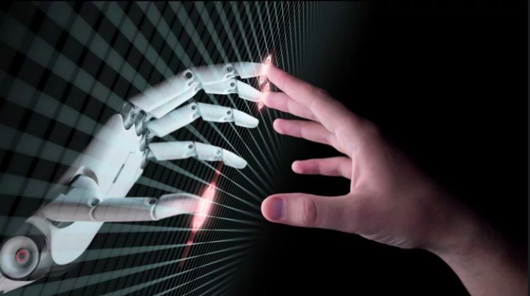

10 Companies Using AI to Grow

Какво представлява проектът
Управлението на мотора е реализирано в процедурата go (speed,dir,steps). Тя управлява постояннотоковия мотор чрез кратки импулси. Във тази функция могат да бъдат зададени броя стъпки steps, скоростта speed и посоката dir. Посоката се определя като се сменя полярността на захранването на мотора посредством Н-моста. Скоростта се задава чрез продължителнстта на импулсите (100 s) и разстоянието между тях (задава се като speed*10 s ) – така наречената широчинноимпулсна модулация. Стъпките се определят от броя подадени импулси.